프로젝트 개요
하나의 앱에서 편리하게 이용할 수 있도록 개발된 통합 캠퍼스 플랫폼입니다.
주요 기능
- 통합 공지사항 조회
- 키워드 기반 맞춤 알림
- 학사일정 확인
- 시간표 관리
- 학식 정보 제공
- 캠퍼스 약도
- 북마크 및 개인화 기능
- 학과 공지 (실험실 기능)
- 관리자 콘솔
제출 파일
- MJC ONE APK (
mjc_one.apk) - 사용자 가이드 문서 (본 문서)
- 시연 영상 (해당 시)
테스트 정보
※ 관리자 기능 확인을 위한 테스트 계정은 아래 7번 관리자 콘솔 시연 항목을 참고해 주세요.
시연 순서
전체 시연 예상 소요 시간: 5~10분
- 홈 화면 확인 — 통합 피드, 바로가기 카드
- 통합 공지사항 조회 — 본교 / CTL / MPU 탭 전환
- 키워드 알림 설정 — 알림 필터 및 스위치 조작
- 시간표 및 학사일정 확인
- 강의 리마인더 알림 — 시간표 설정 후 알림 수신 확인
- 캠퍼스 맵 · 셔틀버스 시간표 확인
- 학과 공지 기능 — 설정 → 실험실 ON 후 공지 탭 «학과» 확인
- 관리자 콘솔 — 설정 빌드번호 5회 탭 → 로그인 → 신고함 / 문의함 / 학과공지 확인
각 항목의 상세는 아래 3번 ~ 7번 세션을 참고해 주세요.
1 APK 설치 방법
-
APK 파일 전달
USB, 이메일, 클라우드 등으로mjc_one.apk를 Android 기기에 저장합니다. -
출처를 알 수 없는 앱 설치 허용
APK를 탭하면 설치가 차단될 수 있습니다.
기기 설정에서 해당 앱(파일·Chrome 등)의 «알 수 없는 앱 설치» 또는 «출처를 알 수 없는 앱»을 허용해 주세요.- 삼성: 설정 → 생체 인식 및 보안 → «알 수 없는 앱 설치»
- Pixel 등: 설정 → 보안 → «알 수 없는 앱 설치»
-
APK 실행 및 설치
파일 관리자에서 APK를 탭한 뒤 «설치» → «열기»를 선택합니다. -
알림 권한 (선택)
푸시 알림 시연 시, 앱 실행 후 알림 권한을 허용해 주세요.
2 앱 실행 흐름
-
스플래시 · 인트로
앱 아이콘(MJC ONE)을 탭하면 로딩 애니메이션 후 메인 화면으로 진입합니다.
최초 실행 시 «앱 소개» 가이드가 표시되면 «홈으로 가기»를 눌러 주세요. -
로그인 없이 이용 가능
공지 열람, 홈 대시보드, 시간표 등 핵심 기능은 로그인 없이 확인할 수 있습니다. -
로그인 (선택)
마이페이지 등 일부 기능은 명지전문대학 이메일(@mjc.ac.kr) 매직 링크 로그인이 필요합니다.
시연 시 로그인 없이도 모든 화면을 확인할 수 있습니다.
3 기능 시연 순서 (권장, 약 3~5분)
하단 탭: 홈 · 공지 · 시간표 · 마이페이지
-
1
홈 · 통합 대시보드
최근 2주 공지 피드, 학식·셔틀·학사 일정 등 바로가기 카드를 확인합니다.
공지 항목을 탭하면 원문으로 이동합니다.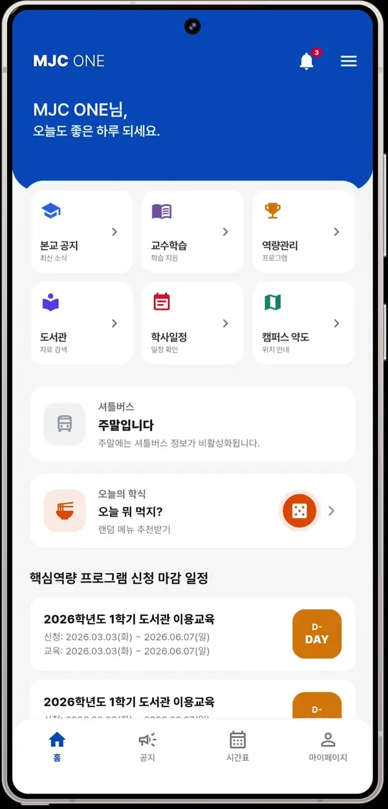
홈 — 통합 피드 및 바로가기 -
2
공지 · 본교(MJC)
공지 탭에서 본교 · CTL · MPU 등 출처별 목록을 전환하며 확인합니다.
목록을 아래로 당기면 새로고침됩니다.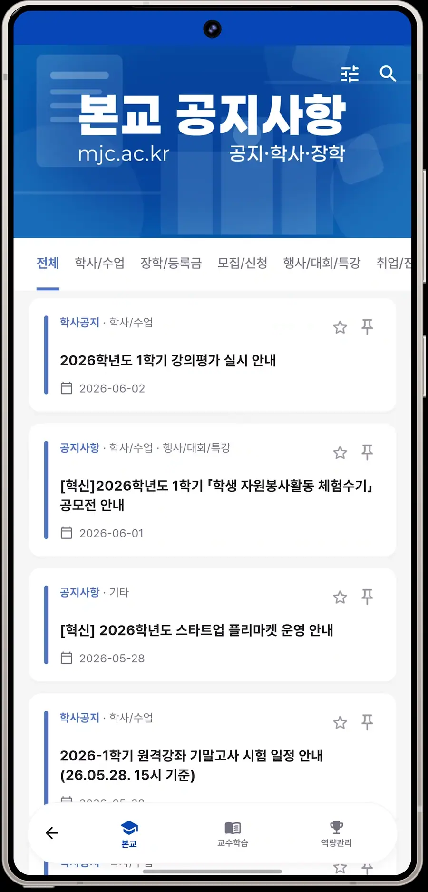
공지 — 본교 공지사항 목록 -
3
공지 상세
공지를 탭해 원문·첨부를 확인합니다.
분류·태그 필터로 원하는 공지만 볼 수 있습니다.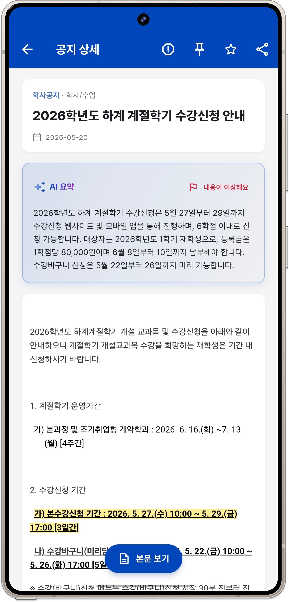
공지 상세 — 원문 및 첨부 확인 -
4
키워드 · 알림 설정
설정에서 알림 출처(MJC·CTL·MPU), 키워드 알림, 전체 알림 등을 조정합니다.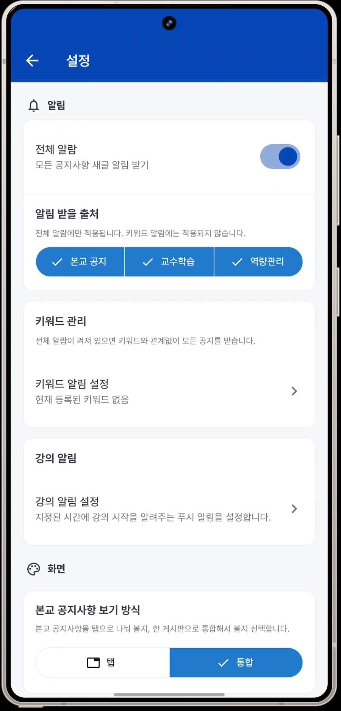
설정 — 맞춤 알림·키워드 -
5
시간표
주간 시간표를 추가·확인합니다.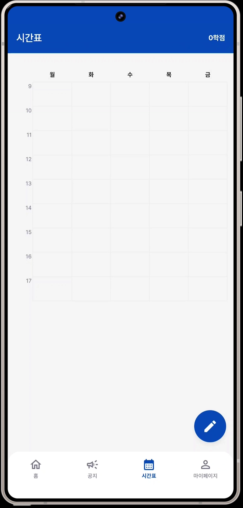
시간표 — 주간 강의 일정 -
6
강의 리마인더 알림
시간표를 등록한 뒤 강의 시작 n분 전 알림을 설정할 수 있습니다.
앱이 완전히 종료된 상태(Background / Terminated)에서도 정확한 시간에 로컬 푸시 알림이 수신됩니다.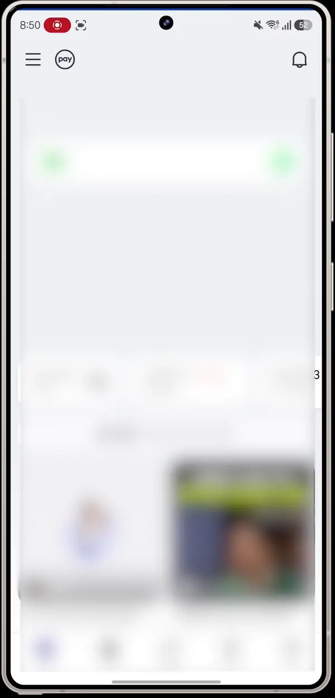
강의 리마인더 — 앱 종료 상태에서도 정확한 알림 수신 -
7
캠퍼스 맵
햄버거 메뉴 또는 홈 바로가기에서 캠퍼스 맵을 열면 교내 건물 위치와 호실 정보를 확인할 수 있습니다.
건물을 탭하면 상세 정보(위치, 주요 호실 등)가 하단 시트로 펼쳐집니다.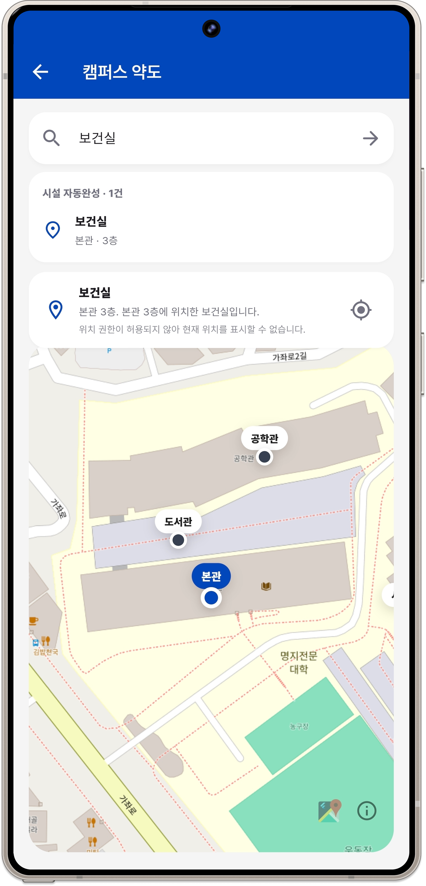
캠퍼스 맵 — 교내 건물 위치 및 상세 안내 -
8
셔틀버스 시간표
홈 바로가기 또는 햄버거 메뉴에서 셔틀버스를 선택하면 운행 노선별 시간표를 확인할 수 있습니다.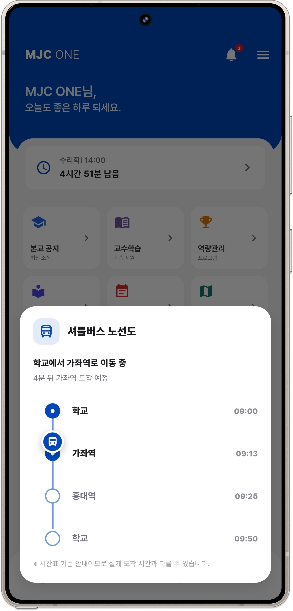
셔틀버스 — 노선별 운행 시간표 -
9
학과 공지 (실험실)
설정 → 실험실에서 «학과 공지»를 켠 뒤 공지 탭 «학과»에서 확인합니다.
배경 설명은 5번을 참고해 주세요.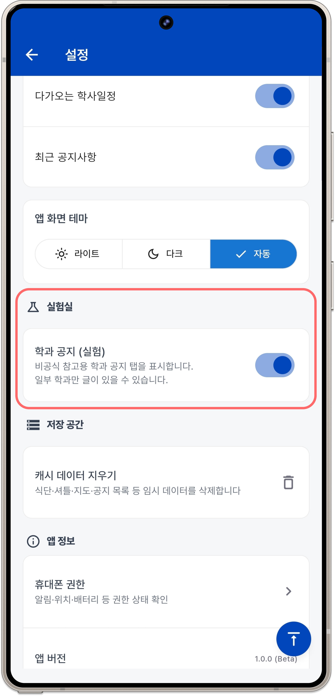
설정 — 실험실 기능 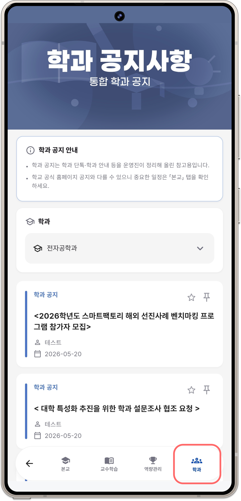
학과 공지 — 실험실 기능 (전자공학과 시연) -
10
마이페이지
공지 북마크, 프로필·MPU 연동, 설정 진입 등 개인화 기능을 확인합니다.
북마크한 공지는 마이페이지에서 모아 볼 수 있습니다.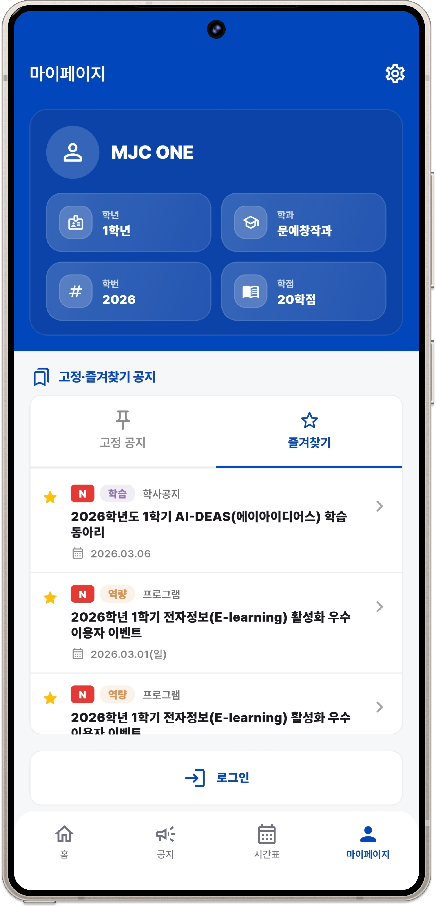
마이페이지 — 프로필·저장된 공지사항
4 주요 기능 요약
- 통합 공지 — 본교(mjc.ac.kr), CTL, MPU 등 흩어진 공지를 한 앱에서 열람
- 학과 공지 (실험실) — 학과 단톡·대화방 공지를 한곳에 모으는 시범 기능 (5번 참고)
- 홈 피드 — Firestore 기반 최근 공지·학사·장학·역량 정보 통합 표시
- 푸시 알림 — Firebase Cloud Messaging, 키워드·출처별 필터 지원
- 알림 내역 — 수신 알림 로컬 저장 및 목록 확인
- 인앱 웹뷰 — 도서관, 공지 원문 등 학교 사이트를 앱 안에서 열람
- 시간표 · 마이페이지 — 개인 학사 정보·북마크 관리
- 관리자 콘솔 — 공지 신고(AI 요약)·개발자 문의·학과 공지 게시 관리 (운영자용, 7번 참고)
5 학과 공지 · 실험실 기능이란?
«학과 공지»는 본교·CTL·MPU처럼 학교 공식 게시판을 크롤링한 것이 아니라,
설정 -> 실험실 메뉴 아래에 있는 시범 기능입니다.
심사 시 «왜 실험실에 있나?» «관리자에 학과 공지는 왜 있나?»라는 질문에 대한 답을 정리했습니다.
학과 단체 대화방(카카오톡 등)에는 수업·과제·행사·장학 안내가 하루에도 여러 건씩 올라옵니다.
대화가 쌓이면 예전 공지를 다시 찾기 어렵고, 놓치는 경우도 많습니다.
«학과별로 흩어진 안내를 앱 한곳에 모아두면 학생들이 편하지 않을까?»는 아이디어에서 출발했고, 학과 조교가 직접 글을 올리고 학생은 공지 탭에서 볼 수 있도록 실험 기능으로 구현했습니다.
왜 «실험실»인가?
- 학교 공식 홈페이지·게시판과 달리, 학과 내부 소통 채널에서 오가는 비공식·단기성 안내를 다루는 기능입니다.
- 아직 전 학과의 데이터가 없고, 소규모 시범 운영 단계이므로 설정의 «실험실» 스위치로 켜고 끌 수 있게 두었습니다.
- 현재 시연 빌드에서는 전자공학과 공지만 올라온 상태입니다.
사용자(학생) 측 — 어떻게 보나?
- 마이페이지 → 설정 → 실험실에서 «학과 공지 (실험)» 스위치를 켭니다.
- 공지 탭 상단에 «학과» 세그먼트가 추가됩니다.
- 학과를 선택하면 해당 학과 조교가 올린 공지 목록을 볼 수 있습니다.
운영(학과 조교) 측 — 관리자와의 연결
학과 조교·운영자는 관리자 콘솔(7번)의 «학과 공지» 탭에서 글을 작성·수정합니다.
제목·본문·첨부 파일·사진·게시일·공개/숨김을 설정할 수 있고, 공개된 글은 학생 앱의 «학과» 탭에 표시됩니다.
즉, 관리자의 «학과 공지»는 이 실험 기능의 게시(업로드) 화면이고, 공지 탭의 «학과»는 학생이 읽는 열람 화면입니다.
6 시연 전 확인 체크리스트
- Android 기기에 APK 설치 완료
- Wi‑Fi 또는 모바일 데이터 연결됨
- 앱 실행 후 홈·공지 탭에서 목록이 로딩됨
- 공지 항목 탭 시 원문 웹뷰 정상 표시
- (선택) 알림 권한 허용 후 푸시 알림 수신 확인
- (선택) 설정 → 실험실 → 학과 공지 ON 후 공지 탭 «학과» 확인
- (선택) 관리자 콘솔 로그인 및 신고함·문의함·학과 공지 확인
7 관리자 콘솔 시연 (선택)
일반 사용자용 앱과 별도로, 운영자·학과 조교가 신고·문의·학과 공지를 관리하는 숨겨진 관리자 화면이 있습니다.
심사 시 운영 체계까지 확인할 때 참고하세요.
① 관리자 화면 진입
- 마이페이지 → 설정으로 이동합니다.
- 하단 «앱 정보» 카드의 빌드 번호를 5회 연속 탭합니다. (2초 이상 간격이 있으면 카운트가 초기화됩니다.)
- 관리자 로그인 화면으로 이동합니다.
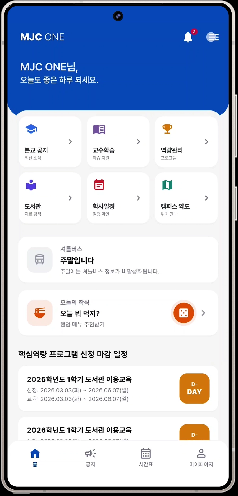
② 관리자 로그인 (테스트 계정)
관리자는 일반 사용자 매직 링크와 달리 이메일·비밀번호로 로그인합니다.
test@mjc.ac.kr비밀번호:
mjcone_admin
admin/users 문서)에 등록된 계정만 접근할 수 있습니다.«권한 없음»이 뜨면 개발팀에 문의해 주세요.
③ 관리자 탭 구성
로그인 후 하단(또는 좌측) 탭에서 세 가지 메뉴를 확인할 수 있습니다.
-
신고함
사용자가 신고한 공지 목록입니다. 신고 사유를 한눈에 확인하고 처리 상태(미처리·처리 완료 등)를 관리합니다.
-
문의함
앱 내 «개발자에게 문의»로 접수된 사용자 문의·피드백을 확인합니다.
-
학과 공지
학과 조교가 올린 학과 공지 게시글 목록입니다.
글 작성·수정 시 제목·본문 외에 첨부 파일·사진, 게시일, 공개/숨김 설정이 가능합니다.
학생 앱 «공지 → 학과» 탭(5번 실험실 기능)에 노출되는 콘텐츠를 여기서 관리합니다.
8 핵심 기술 성과 및 구현 내용
본 프로젝트에 적용된 핵심 기술 성과 및 구현 내용은 다음과 같습니다.
명지전문대학 본 홈페이지, 교수학습센터(CTL), 역량이력관리(MPU) 등 여러 웹 서비스에 분산되어 있는 공지사항을 하나의 앱에서 확인할 수 있도록 Python 기반 크롤러를 개발하였습니다.
또한 GitHub Actions를 활용하여 크롤러가 정기적으로 자동 실행되도록 구성하였으며, 수집된 데이터는 Firebase에 저장되어 별도의 서버 운영 없이도 최신 공지사항을 지속적으로 제공할 수 있도록 구현하였습니다.
사용자가 등록한 시간표를 기반으로 수업 시작 전 알림을 제공하는 기능을 구현하였습니다.
앱이 종료된 상태나 기기가 재부팅된 이후에도 알림이 정상적으로 동작할 수 있도록 Android 시스템 스케줄링 기능을 활용하여 안정성을 확보하였습니다.
이를 통해 사용자가 중요한 수업 일정을 놓치지 않도록 지원합니다.
공지사항의 길이가 길어 핵심 내용을 파악하기 어려운 문제를 해결하기 위해 AI 기반 요약 기능을 도입하였습니다.
수집된 공지 데이터를 자동으로 분석하여 주요 내용을 간결하게 정리하고, 사용자가 공지의 핵심 정보를 빠르게 확인할 수 있도록 하였습니다. 또한 AI 활용 공지 분류 및 태그 지정을 함께 적용하여 필요한 정보를 보다 쉽게 탐색할 수 있도록 구성하였습니다.
공지사항, 시간표, 학사일정 등 다양한 기능을 하나의 앱에 통합하면서도 원활한 사용 경험을 제공할 수 있도록 화면 구성과 데이터 로딩 방식을 지속적으로 개선하였습니다.
Firebase 사용량과 네트워크 트래픽을 최소화하기 위해 필요한 시점에만 데이터를 불러오는 구조를 적용하였으며, 캐시를 활용하여 앱의 응답성과 운영 효율성을 높였습니다.
9 문제 해결
공지 목록이 비어 있거나 로딩되지 않음
- 인터넷 연결 상태를 확인해 주세요.
- 목록을 아래로 당겨 새로고침해 보세요.
- 잠시 후 다시 실행해 보세요. (Firebase 서버 연결 지연 가능)
APK 설치가 차단됨
- 기기 설정에서 «알 수 없는 앱 설치»를 허용했는지 확인해 주세요.
- Play Protect 경고가 뜨면 «그래도 설치»를 선택해 주세요. (교내 시연용 빌드입니다.)
학과 공지 탭이 보이지 않음
- 설정 → 실험실 → «학과 공지 (실험)» 스위치가 꺼져 있으면 공지 탭에 «학과»가 나타나지 않습니다.
- 현재 시연 데이터는 전자공학과 위주입니다. 다른 학과를 선택하면 글이 없을 수 있습니다.
개발 정보
- 프로젝트명
- MJC in one
- 개발자
- 이태현, 김의겸, 김형윤
- 개발 기간
- 2026.04 - 2026.06
- 개발 인원
- 3
사용 기술
- Flutter & Dart
- Python & BeautifulSoup4 (Web Crawler)
- GitHub Actions (CI/CD Automation)
- Firebase Authentication
- Cloud Firestore & Storage
- Firebase Cloud Messaging (FCM)
- Google Cloud Platform(Google Ai Studio)
소스 코드
GitHub 저장소: github.com/LeeTaeHyon/MJC_in_one